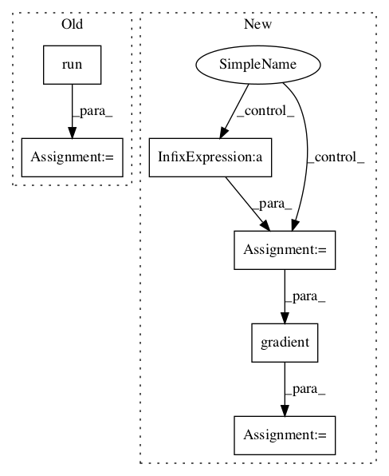

641a28fbf0daff0ad1ad0f43d2c4b545cb6f9656,examples/reinforcement_learning/tutorial_cartpole_ac.py,Critic,learn,#Critic#Any#Any#Any#,142

Before Change
self.train_op = tf.train.AdamOptimizer(lr).minimize(self.loss)
def learn(self, s, r, s_):
v_ = self.sess.run(self.v, {self.s: [s_]})
td_error, _ = self.sess.run([self.td_error, self.train_op], {self.s: [s], self.v_: v_, self.r: r})
return td_error
sess = tf.Session()
After Change
with tf.GradientTape() as tape:
v = self.model([s]).outputs
// TD_error = r + lambd * V(newS) - V(S)
td_error = r + LAMBDA * v_ - v
loss = tf.square(td_error)
grad = tape.gradient(loss, self.model.weights)
self.optimizer.apply_gradients(zip(grad, self.model.weights))
return td_error
In pattern: SUPERPATTERN
Frequency: 3
Non-data size: 6
Instances
Project Name: tensorlayer/tensorlayer
Commit Name: 641a28fbf0daff0ad1ad0f43d2c4b545cb6f9656
Time:
Author: null
File Name: examples/reinforcement_learning/tutorial_cartpole_ac.py
Class Name: Critic
Method Name: learn
Project Name: horovod/horovod
Commit Name: 65bb3580e5cdd9adee17b5f80fba949550931271
Time:
Author: null
File Name: test/test_tensorflow.py
Class Name: MPITests
Method Name: test_horovod_allreduce_grad
Project Name: horovod/horovod
Commit Name: 65bb3580e5cdd9adee17b5f80fba949550931271
Time:
Author: null
File Name: test/test_tensorflow.py
Class Name: MPITests
Method Name: test_horovod_broadcast_grad